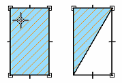
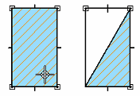
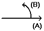

Fill command bar
Displays the active settings for a fill.
- Style
-
Lists and applies the available styles. To quickly define a new fill style, you can type a name in the box. The new style uses the current settings on the command bar. You can also create new fill styles with the Style command.
- Pattern Color
-
Applies a pattern line color for pattern fills. You can click the More option to define custom colors with the Color dialog box.
- Solid Color
-
Applies a background color to the fill. If you select No Fill or None, the background will be transparent. Filled elements cover other elements when they overlap. You can click the More option to define custom colors with the Colors dialog box.
- Redo Fill
-
If you modify the boundary of a fill by drawing a new element, the Redo Fill button recalculates the boundary of the changed area and reapplies the fill to the area within the original boundary.
-
Here, the object was filled by clicking in the upper-left corner. When the boundary changed, only the area above the new line was refilled.

-
Here, the object was filled by clicking in the bottom-right corner. When the boundary changed, only the area below the new line was refilled.

-
- Angle
-
Sets the angle of the fill in the active unit. Zero degrees is horizontal to the x axis, and the angle (A) increases in a counterclockwise direction with zero on the positive side (B) of the x axis. If you type a negative value, the software displays the equivalent positive value.

- Spacing
-
Adjusts the spacing of the pattern lines in a fill.
How do I
Place a fillFormat a fill
Refill a modified boundary
Learn more
Applying colors and patterns to closed boundariesLook up more details
Fill commandFill Properties dialog box